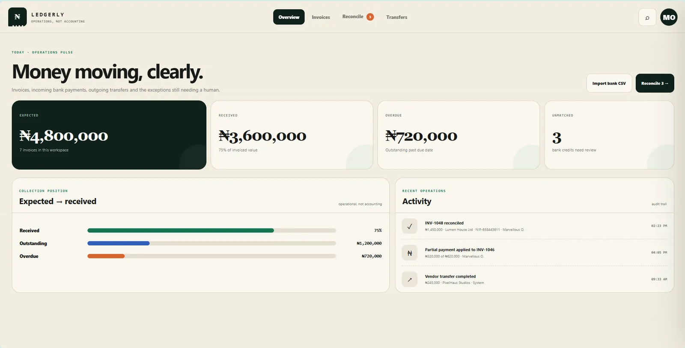
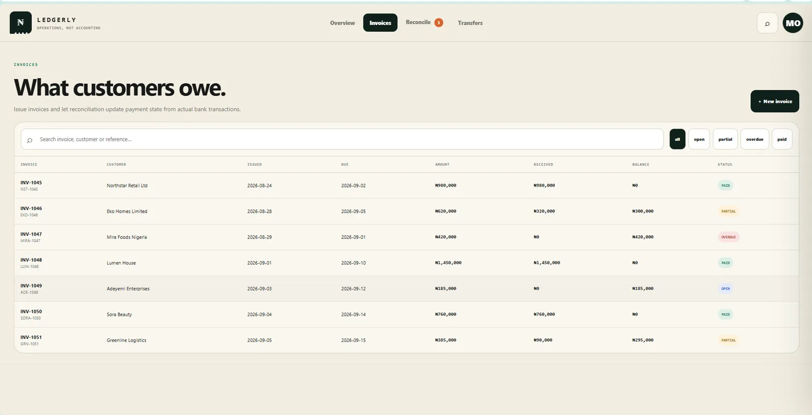
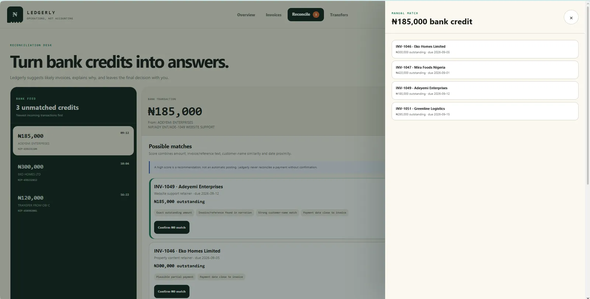
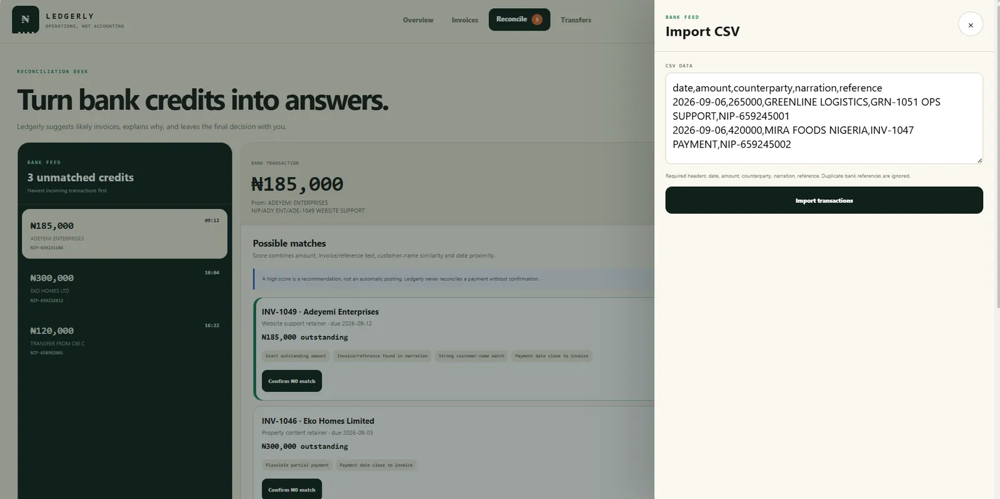
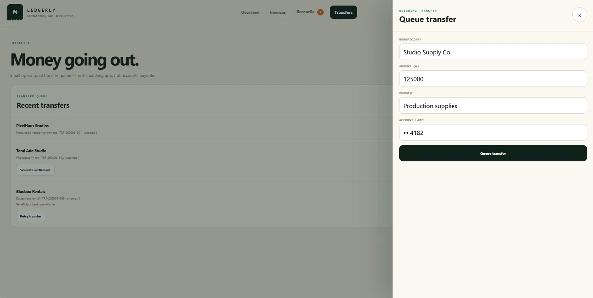

MONEY AS A RECORD
Invoices, received money and transfers are represented as connected operational records.


Small-business operations become difficult to trust when invoices, bank payments and outgoing transfers cannot be reconciled quickly.
Ledgerly narrows the job to a clear chain: invoices → bank payments → transfers → reconciliation, with matching confidence and audit history.



This section reads the supplied artifacts as product evidence: what the interface has to keep understandable, connected or constrained.
Invoices, received money and transfers are represented as connected operational records.
Bank reconciliation is visible as its own job rather than a hidden bookkeeping side effect.
The product language is oriented around a Nigerian SME workflow and Naira-denominated activity.
The interface makes it possible to inspect what is recorded, what moved and what still needs attention.
A compact contact sheet keeps the page readable; select any frame to inspect it at full size.